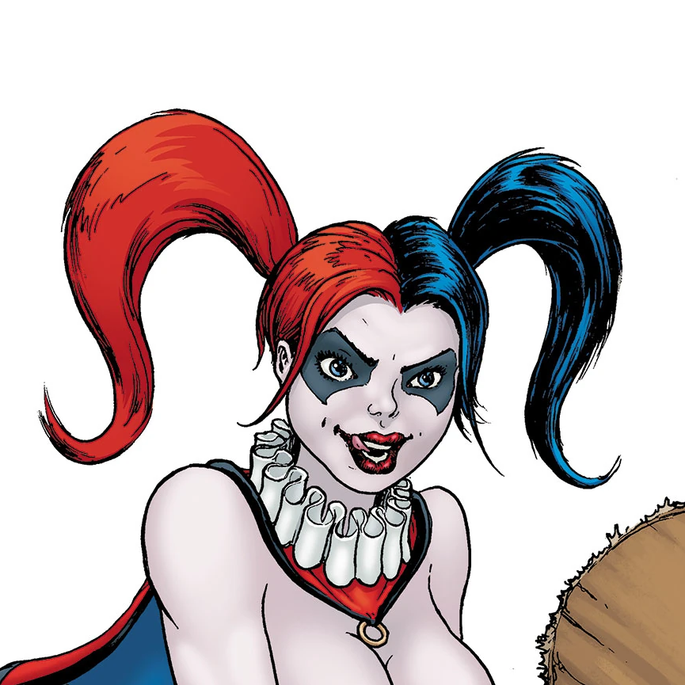

Nightwing
Ex-Robin y el primero en asumir el manto de un héroe independiente, Nightwing es un experto en combate cuerpo a cuerpo y acrobacias, con una agilidad increíble. Sus escrima sticks lo convierten en un gran oponente, mientras que su lealtad a sus amigos lo hacen un aliado inquebrantable.

Shazam
Cuando Billy Batson grita la palabra mágica "SHAZAM", se transforma en un héroe adulto con la fuerza de Hércules, la velocidad de Mercurio y el poder del mismísimo Zeus. Combina la inocencia de un niño con el poder de un dios, creando momentos tanto épicos como divertidos.

Lex Luthor
Empresario multimillonario, inventor brillante y estratega sin igual, Lex es la mente maestra detrás de innumerables planes para moldear el mundo a su imagen. Aunque carece de poderes, su intelecto y recursos lo convierten en una amenaza tan grande como cualquier superhéroe.
Starfire
Una guerrera extraterrestre de Tamaran con poderes increíbles y un corazón puro. Con su energía radiante y habilidades de vuelo, Starfire puede lanzar potentes explosiones estelares y es una experta en combate. Perfecta para los fanáticos de los superhéroes con un toque cósmico y una personalidad carismática que irradia alegría y valentía.
Raven
La hija de un demonio y una hechicera poderosa, Raven es el equilibrio perfecto entre oscuridad y misterio. Con su icónica capa y habilidades místicas, domina la telequinesis, la proyección de energía y la magia oscura. Raven lucha con su lado sombrío mientras protege a los inocentes con una calma inquebrantable.

Harley Quinn
Con su carisma desbordante, su estilo único y su inseparable mazo, Harley combina ingenio, locura y habilidad en combate. Amante del caos, pero con un lado sorprendentemente tierno, es perfecta para los que buscan un personaje lleno de humor, rebeldía y un toque de imprevisibilidad.